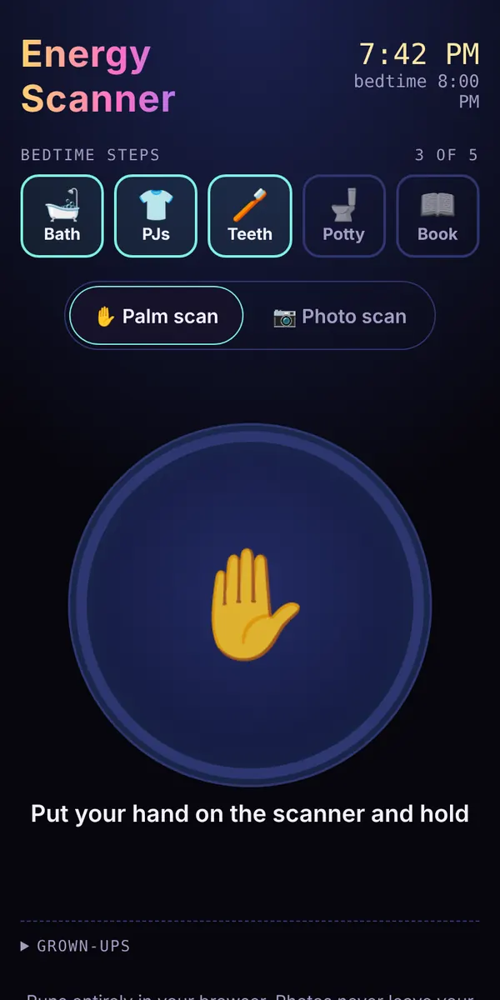

Family app · in active development
Energy Scanner
Bedtime had become a nightly negotiation. I built a routine that ends with a neutral machine, not a parent, deciding it's time to sleep.

The problem
Bedtime with my kids had become a nightly negotiation. A parent saying "it's time" starts the argument; a neutral machine saying it takes the argument off the parent.
What I built
- A routine first: kids tick off their steps (bath, PJs, teeth, potty, book), then scan.
- Palm scan: press and hold the pad until the ring fills.
- Photo scan: take or upload a photo and the child's energy glows off them as an animated aura, softer and slower when sleepy. Grown-ups can save or share it.
How it works
The reading is a color from Rainbow (far too energetic for sleep) down to Grey (time to recharge). It never reads Rainbow once every step is done, and a grown-up switch makes every scan read sleepy. The photo scan runs entirely on the phone with a person-segmentation model (MediaPipe) and a GPU shader.
Product calls
- Routine first. A scan alone wears off, so it is the reward at the end of real steps.
- Privacy before camera. Kids' faces should never go to a cloud model, so the camera waited until the photo scan could run on the phone. No server, no account, no tracking.
- An illustrated sample person. Anyone can see the aura without a photo, and no real person's photo is ever published.
Proof
- On-devicePhotos never leave the phone; the page is locked so it can only talk to its own origin.
- Tested10+ test files, including end-to-end.
- DocumentedA case study in the repo covers the constraints and decisions.
Try it
Open the app and use the sample person to see the aura, or run the palm scan.
Status and what's next
Live. It started as a palm-scan prototype my kids tested at bedtime; the photo scan came once it could stay on the phone. Next is a copy pass before I call it done.